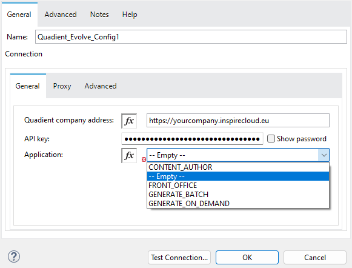

Introduction
The Anypoint™ Connectorintegrates the functionality of Inspire Evolve into your business applications. You can use it to manage and customize your communications with Inspire Evolve.
This document is intended for Inspire Evolve users and describes the Anypoint™ Connector and its configuration for integrating Inspire Evolve applications:
Content Author – Allows line of business users to create, author, and maintain communication templates, external blocks, display rules, and other resources. It also provides customizable approval processes to ensure that content is validated before use.
Front Office – Enables line of business users to personalize communications while maintaining standard text and styling, with variable fields pre-filled from the core system. It also offers customizable approval processes to validate communications before sending them through various digital and physical channels.
Generate – Provides a highly-scalable and secure cloud-based service for the development, testing and production.
Requirements
Here are the software requirements for using the connector:
| Mule Runtime™ | 4.6 or newer |
| Java® | 1.8, 11, 17 |
| Inspire Evolve | N/A |
This document requires you to be familiar with Mule®, Anypoint Connectors™, Anypoint Studio™, Mule® concepts, elements in a Mule® flow, and Global Elements.
You need the API Key to test your connection to your target resource. See the Configuring Open API Key section for details.
Configuring Open API Key
To configure the Open API key:
Add any operation and create a new Connector configuration.

The Global Element Properties dialog opens.
Specify the URL of your company in Quadient Cloud via Quadient company address.
Specify the API key created in the company in Quadient Cloud (in ADMINISTRATION | API Keys).
To see the value of the key, enable Show password.
Choose one of the applications you are using in Inspire Evolve (for which you have configured the API).
The application selected here is used only for the purposes of validation. If you have API configured for multiple applications, you can select any of them.
Click on the Test Connection button to validate the connection to Inspire Evolve via the specified API Key.
If successful, a confirmation message is displayed:

Once the connection is validated, you can proceed to configuring the operations.
Operations
Here you can find the configuration of operations for integration the individual Inspire Evolve applications:
Content Author – for integrating Content Author.
Front Office – for integrating Front Office (single document) mode.
Generate in Batch Mode – for integrating Generate in batch (multiple documents) mode.
Generate in On-Demand Mode – for integrating Generate in on-demand (single document) mode.
Content Author
This section describes the configuration of operations for use with the Content Author application.
See the Content Author section in the Inspire Evolve - An Overview document at Quadient University for additional information about Content Author.
Content Author – List Templates

Retrieves templates from Content Author.
Required Parameters
There are no required parameters.
Response
Returns a JSON containing the templates with the following information:
Name – Name of the template.
Version – The version of the template.
Edited – The date and time of the last edit.
Metadata – The template's metadata, i.e. properties that provide basic information about the document.
Multipart Data
To send multipart data, use the Attachments option:

This name will be used to reference the data part in
Generate
request://, e.g. if Name is set to Part1, the request
will be request://Part1.
Front Office
This section describes the configuration of operations for use with the Front Office application.
See the Front Office section in the Inspire Evolve - An Overview document at Quadient University for additional information about Front Office.
Front Office – Create Ticket
Creates a new ticket in Front Office.
See the Tickets section in the -Front Office – User Manual for detailed information about tickets in Front Office.
Required Parameters
The state must be in the approval process.
See the Front Office – User Manual for additional information about this option.
Response
Returns a JSON with the GUID.
Generate in Batch Mode
This section describes the configuration of operations for use with the batch mode of the Generate application.
See the Generate section in the Inspire Evolve - An Overview document at Quadient University for additional information about Generate.
Batch –– Start Batch Job
Creates a new batch job in Generate.
Required Parameters
If the pipeline is inside a folder, this parameter must contain the
whole path, e.g.
PipelineName:'Folder/NestedFolder/pipelineName'.
Response
Multipart Data
To send multipart data, use the Attachments option:
This name will be used to reference the data part in
Generate
request://, e.g. if Name is set to Part1, the request
will be request://Part1.
Batch – Batch Job Status
Retrieves the status of a batch job in Generate.
Required Parameters
Response
Returns the current status of the specified batch job:
'WaitingForProcessing',
'Preprocessing',
'Processing',
'Finished',
'Failed',
'Unknown',
'Stopping',
'Stopped',
'TimedOut',
'Skipped',
'PartiallyFinished',
'Running'
Batch – Create Working Folder
Creates a new working folder in Generate.
Required Parameters
It will be visible in GUI and included in the folder's ID.
Response
Returns the ID of the working folder in plain text format.
Generate in On-Demand Mode
This section describes the configuration of operations for use with the on-demand mode of the Generate application.
See the Generate section in the Inspire Evolve - An Overview document at Quadient University for additional information about Generate.
OnDemand – OnDemand
Starts and receives results of on-demand jobs in Generate. This includes PDF generation and downloading.
Required Parameters
If the pipeline is inside a folder, this parameter must contain the
whole path, e.g.
PipelineName:'Folder/NestedFolder/pipelineName'.
Response
The content of the response depends on the job.
Multipart Data
To send multipart data, use the Attachments option:
This name will be used to reference the data part in
Generate
request://, e.g. if Name is set to Part1, the request
will be request://Part1.
OnDemand – OnDemand Custom Data
Starts and receives results of on-demand jobs while passing custom data.
Required Parameters
If the pipeline is inside a folder, this parameter must contain the
whole path, e.g.
PipelineName:'Folder/NestedFolder/pipelineName'.
Response
The content of the response depends on the job.
Useful Links
Here you can find links to documents and manuals that can help you with the configuration process.
Manuals
https://yourCompany.inspirecloud.eu/doc/?product=generate&document=user-guide&id=introductionhttps://yourCompany.inspirecloud.eu/doc/?product=content-author&document=user-manual&id=dashboardCommonhttps://yourCompany.inspirecloud.eu/doc/?product=front-office&document=user-manual&id=dashboardCommon
OpenAPI Documentation
https://yourCompany.inspirecloud.eu/doc/OpenApi/OnDemand.jsonhttps://yourCompany.inspirecloud.eu/doc/OpenApi/Batch.jsonhttps://yourCompany.inspirecloud.eu/authoring/api/system/v1https://yourCompany.inspirecloud.eu/frontoffice/api/system/v2
Quadient Support
Quadient group
This document was generated on 2024-11-27 and may not be the latest version. As we continuously update and improve our documents, please visit Quadient University and ensure that you have the latest version. You will also find more samples, articles, discussions and documentation about all of our Quadient ICA solutions there.
Should you have any queries, suggestions or comments concerning these materials, please do not hesitate to contact us at documentation@quadient.com.
Multiple sites of the Quadient group of companies hold certificates to ISO 9001, ISO 27001 and ISO 14001.
Legal Disclaimers and Copyright
Information contained within this document may contain technical inaccuracies or typographical errors. Changes will be added periodically and modifications will be made thereto without prior notification. Quadient does not enter into any obligations or responsibilities regarding the content of this document and does not assume any legal liability – neither expressed or implied – for its accuracy, completeness and/or usefulness.
This document may contain links to third-party web sites. These links are solely provided as a convenience and not as an endorsement by Quadient of the contents found on those third-party web sites. Quadient is not responsible for the content of linked third-party sites and does not guarantee the accuracy of materials found on them. Quadient does not endorse any products presented on third-party websites. If you decide to access any linked third-party web sites, you do so at your own risk.
Copying of the software or manual on to any data storage medium or in any other way, except for explicit company internal use, is strictly forbidden without the prior written authorization of Quadient. Failure to comply with these restrictions is liable to prosecution.
The application uses data from haveibeenpwned.com licensed under Creative Commons Attribution 4.0 International License. This data is used for the detection of leaked credentials.
Trademarks
Quadient® and its logo are trademarks of Quadient group.
Adobe® and Adobe PDF Library™ are trademarks or registered trademarks of Adobe Systems Inc. in the US and other countries. The names, logos and international property rights of other companies regarding products and services remain the property of their respective owners.